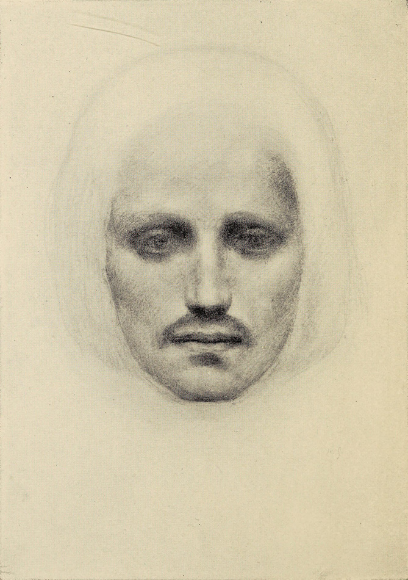
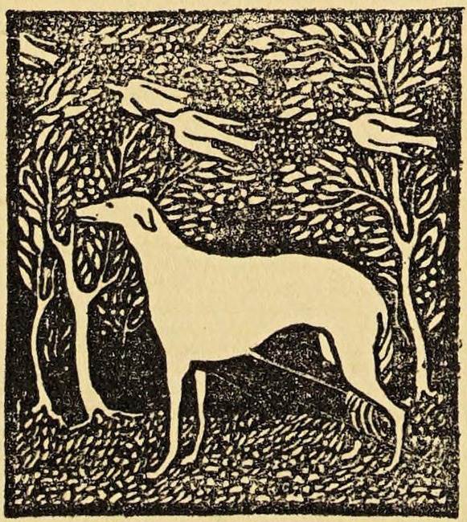

THE PROPHET
By Kahlil Gibran

New York: Alfred A. Knopf
1923
Copyright 1923 by Kahlil Gibran
All rights reserved. No part of this book may be reproduced in any form without
permission in writing from the publisher, except by a reviewer who may quote
brief passages or reproduce not more than three illustrations in a review to be
printed in a magazine or newspaper.
Published September 1923
The Twelve Illustrations In This Volume Are Reproduced From Original
Drawings By The Author
“His power came from some great reservoir of spiritual life else it could
not have been so universal and so potent, but the majesty and beauty of the
language with which he clothed it were all his own?”
—Claude Bragdon
THE BOOKS OF KAHLIL GIBRAN
The Madman. 1918 Twenty Drawings. 1919 The Forerunner. 1920 The Prophet. 1923
Sand and Foam. 1926 Jesus the Son of Man. 1928 The Forth Gods. 1931 The
Wanderer. 1932 The Garden of the Prophet 1933 Prose Poems. 1934 Nymphs of the
Valley. 1948
THE PROPHET
Almustafa, the chosen and the beloved, who was a dawn unto his own
day, had waited twelve years in the city of Orphalese for his ship that was to
return and bear him back to the isle of his birth.
And in the twelfth year, on the seventh day of Ielool, the month of reaping, he
climbed the hill without the city walls and looked seaward; and he beheld his
ship coming with the mist.
Then the gates of his heart were flung open, and his joy flew far over the sea.
And he closed his eyes and prayed in the silences of his soul.
But as he descended the hill, a sadness came upon him, and he thought in his
heart:
How shall I go in peace and without sorrow? Nay, not without a wound in the
spirit shall I leave this city. Long were the
days of pain I have spent within its walls, and long were the nights of
aloneness; and who can depart from his pain and his aloneness without regret?
Too many fragments of the spirit have I scattered in these streets, and too
many are the children of my longing that walk naked among these hills, and I
cannot withdraw from them without a burden and an ache.
It is not a garment I cast off this day, but a skin that I tear with my own
hands.
Nor is it a thought I leave behind me, but a heart made sweet with hunger and
with thirst.
Yet I cannot tarry longer.
The sea that calls all things unto her calls me, and I must embark.
For to stay, though the hours burn in the night, is to freeze and crystallize
and be bound in a mould.
Fain would I take with me all that is here. But how shall I?
A voice cannot carry the tongue and the lips
that gave it wings. Alone must it seek the ether.
And alone and without his nest shall the eagle fly across the sun.
Now when he reached the foot of the hill, he turned again towards the sea, and
he saw his ship approaching the harbour, and upon her prow the mariners, the
men of his own land.
And his soul cried out to them, and he said:
Sons of my ancient mother, you riders of the tides,
How often have you sailed in my dreams. And now you come in my awakening, which
is my deeper dream.
Ready am I to go, and my eagerness with sails full set awaits the wind.
Only another breath will I breathe in this still air, only another loving look
cast backward,
And then I shall stand among you, a seafarer among seafarers.
And you, vast sea, sleepless mother,
Who alone are peace and freedom to the river and the stream,
Only another winding will this stream make, only another murmur in this glade,
And then shall I come to you, a boundless drop to a boundless ocean.
And as he walked he saw from afar men and women leaving their fields and their
vineyards and hastening towards the city gates.
And he heard their voices calling his name, and shouting from field to field
telling one another of the coming of his ship.
And he said to himself:
Shall the day of parting be the day of gathering?
And shall it be said that my eve was in truth my dawn?
And what shall I give unto him who has left his plough in midfurrow, or to him
who has stopped the wheel of his winepress? Shall my heart
become a tree heavy-laden with fruit that I may gather and give unto them?
And shall my desires flow like a fountain that I may fill their cups?
Am I a harp that the hand of the mighty may touch me, or a flute that his
breath may pass through me?
A seeker of silences am I, and what treasure have I found in silences that I
may dispense with confidence?
If this is my day of harvest, in what fields have I sowed the seed, and in what
unremembered seasons?
If this indeed be the hour in which I lift up my lantern, it is not my flame
that shall burn therein.
Empty and dark shall I raise my lantern,
And the guardian of the night shall fill it with oil and he shall light it
also.
These things he said in words. But much in his heart remained unsaid. For he himself could not speak his deeper secret.
And when he entered into the city all the people came to meet him, and they
were crying out to him as with one voice.
And the elders of the city stood forth and said:
Go not yet away from us.
A noontide have you been in our twilight, and your youth has given us dreams to
dream.
No stranger are you among us, nor a guest, but our son and our dearly beloved.
Suffer not yet our eyes to hunger for your face.
And the priests and the priestesses said unto him:
Let not the waves of the sea separate us now, and the years you have spent in
our midst become a memory.
You have walked among us a spirit, and your
shadow has been a light upon our faces.
Much have we loved you. But speechless was our love, and with veils has it been
veiled.
Yet now it cries aloud unto you, and would stand revealed before you.
And ever has it been that love knows not its own depth until the hour of
separation.
And others came also and entreated him. But he answered them not. He only bent
his head; and those who stood near saw his tears falling upon his breast.
And he and the people proceeded towards the great square before the temple.
And there came out of the sanctuary a woman whose name was Almitra. And she was
a seeress.
And he looked upon her with exceeding tenderness, for it was she who had first
sought and believed in him when he had been but a day in their city. And she hailed him, saying:
Prophet of God, in quest of the uttermost, long have you searched the distances
for your ship.
And now your ship has come, and you must needs go.
Deep is your longing for the land of your memories and the dwelling place of
your greater desires; and our love would not bind you nor our needs hold you.
Yet this we ask ere you leave us, that you speak to us and give us of your
truth.
And we will give it unto our children, and they unto their children, and it
shall not perish.
In your aloneness you have watched with our days, and in your wakefulness you
have listened to the weeping and the laughter of our sleep.
Now therefore disclose us to ourselves, and tell us all that has been shown you
of that which is between birth and death.
And he answered,
People of Orphalese, of what can I speak save
of that which is even now moving within your souls?
end chapter
Then said Almitra, Speak to us of Love.
And he raised his head and looked upon the people, and there fell a stillness
upon them. And with a great voice he said:
When love beckons to you, follow him,
Though his ways are hard and steep.
And when his wings enfold you yield to him,
Though the sword hidden among his pinions may wound you.
And when he speaks to you believe in him,
Though his voice may shatter your dreams as the north wind lays waste the
garden.
For even as love crowns you so shall he crucify you. Even as he is for your
growth so is he for your pruning.
Even as he ascends to your height and caresses
your tenderest branches that quiver in the sun,
So shall he descend to your roots and shake them in their clinging to the
earth.
Like sheaves of corn he gathers you unto himself.
He threshes you to make you naked.
He sifts you to free you from your husks.
He grinds you to whiteness.
He kneads you until you are pliant;
And then he assigns you to his sacred fire, that you may become sacred bread
for God’s sacred feast.
All these things shall love do unto you that you may know the secrets of your
heart, and in that knowledge become a fragment of Life’s heart.
But if in your fear you would seek only love’s peace and love’s
pleasure,
Then it is better for you that you cover your
nakedness and pass out of love’s threshing-floor,
Into the seasonless world where you shall laugh, but not all of your laughter,
and weep, but not all of your tears.
Love gives naught but itself and takes naught but from itself.
Love possesses not nor would it be possessed;
For love is sufficient unto love.
When you love you should not say, “God is in my heart,” but rather,
“I am in the heart of God.”
And think not you can direct the course of love, for love, if it finds you
worthy, directs your course.
Love has no other desire but to fulfil itself.
But if you love and must needs have desires, let these be your desires:
To melt and be like a running brook that sings its melody to the night. To know the pain of too much tenderness.
To be wounded by your own understanding of love;
And to bleed willingly and joyfully.
To wake at dawn with a winged heart and give thanks for another day of loving;
To rest at the noon hour and meditate love’s ecstacy;
To return home at eventide with gratitude;
And then to sleep with a prayer for the beloved in your heart and a song of
praise upon your lips.
end chapter
Then Almitra spoke again and said, And what of
Marriage master?
And he answered saying:
You were born together, and together you shall be forevermore.
You shall be together when the white wings of death scatter your days.
Aye, you shall be together even in the silent memory of God.
But let there be spaces in your togetherness,
And let the winds of the heavens dance between you.
Love one another, but make not a bond of love:
Let it rather be a moving sea between the shores of your souls.
Fill each other’s cup but drink not from one cup.
Give one another of your bread but eat not from the same loaf. Sing and dance together and be joyous, but let each one of
you be alone,
Even as the strings of a lute are alone though they quiver with the same music.
Give your hearts, but not into each other’s keeping.
For only the hand of Life can contain your hearts.
And stand together yet not too near together:
For the pillars of the temple stand apart,
And the oak tree and the cypress grow not in each other’s shadow.
end chapter
And a woman who held a babe against her bosom
said, Speak to us of Children.
And he said:
Your children are not your children.
They are the sons and daughters of Life’s longing for itself.
They come through you but not from you,
And though they are with you yet they belong not to you.
You may give them your love but not your thoughts,
For they have their own thoughts.
You may house their bodies but not their souls,
For their souls dwell in the house of tomorrow, which you cannot visit, not
even in your dreams.
You may strive to be like them, but seek not to make them like you. For life goes not backward nor tarries with
yesterday.
You are the bows from which your children as living arrows are sent forth.
The archer sees the mark upon the path of the infinite, and He bends you with
His might that His arrows may go swift and far.
Let your bending in the Archer’s hand be for gladness;
For even as he loves the arrow that flies, so He loves also the bow that is
stable.
end chapter
Then said a rich man, Speak to us of
Giving.
And he answered:
You give but little when you give of your possessions.
It is when you give of yourself that you truly give.
For what are your possessions but things you keep and guard for fear you may
need them tomorrow?
And tomorrow, what shall tomorrow bring to the overprudent dog burying bones in
the trackless sand as he follows the pilgrims to the holy city?
And what is fear of need but need itself?
Is not dread of thirst when your well is full, the thirst that is unquenchable?
There are those who give little of the much
which they have—and they give it for recognition and their hidden desire
makes their gifts unwholesome.
And there are those who have little and give it all.
These are the believers in life and the bounty of life, and their coffer is
never empty.
There are those who give with joy, and that joy is their reward.
And there are those who give with pain, and that pain is their baptism.
And there are those who give and know not pain in giving, nor do they seek joy,
nor give with mindfulness of virtue;
They give as in yonder valley the myrtle breathes its fragrance into space.
Through the hands of such as these God speaks, and from behind their eyes He
smiles upon the earth.
It is well to give when asked, but it is better to give unasked, through
understanding;
And to the open-handed the search for one who
shall receive is joy greater than giving.
And is there aught you would withhold?
All you have shall some day be given;
Therefore give now, that the season of giving may be yours and not your
inheritors’.
You often say, “I would give, but only to the deserving.”
The trees in your orchard say not so, nor the flocks in your pasture.
They give that they may live, for to withhold is to perish.
Surely he who is worthy to receive his days and his nights, is worthy of all
else from you.
And he who has deserved to drink from the ocean of life deserves to fill his
cup from your little stream.
And what desert greater shall there be, than that which lies in the courage and
the confidence, nay the charity, of receiving?
And who are you that men should rend their
bosom and unveil their pride, that you may see their worth naked and their
pride unabashed?
See first that you yourself deserve to be a giver, and an instrument of giving.
For in truth it is life that gives unto life—while you, who deem yourself
a giver, are but a witness.
And you receivers—and you are all receivers—assume no weight of
gratitude, lest you lay a yoke upon yourself and upon him who gives.
Rather rise together with the giver on his gifts as on wings;
For to be overmindful of your debt, is ito doubt his generosity who has the
freehearted earth for mother, and God for father.
end chapter
Then an old man, a keeper of an inn, said,
Speak to us of Eating and Drinking.
And he said:
Would that you could live on the fragrance of the earth, and like an air plant
be sustained by the light.
But since you must kill to eat, and rob the newly born of its mother’s
milk to quench your thirst, let it then be an act of worship,
And let your board stand an altar on which the pure and the innocent of forest
and plain are sacrificed for that which is purer and still more innocent in
man.
When you kill a beast say to him in your heart,
“By the same power that slays you, I too am slain; and I too shall be
consumed. For the law that delivered you into
my hand shall deliver me into a mightier hand.
Your blood and my blood is naught but the sap that feeds the tree of
heaven.”
And when you crush an apple with your teeth, say to it in your heart,
“Your seeds shall live in my body,
And the buds of your tomorrow shall blossom in my heart,
And your fragrance shall be my breath, And together we shall rejoice through
all the seasons.”
And in the autumn, when you gather the grapes of your vineyards for the
winepress, say in your heart,
“I too am a vineyard, and my fruit shall be gathered for the winepress,
And like new wine I shall be kept in eternal vessels.”
And in winter, when you draw the wine, let
there be in your heart a song for each cup;
And let there be in the song a remembrance for the autumn days, and for the
vineyard, and for the winepress.
end chapter
Then a ploughman said, Speak to us of
Work.
And he answered, saying:
You work that you may keep pace with the earth and the soul of the earth.
For to be idle is to become a stranger unto the seasons, and to step out of
life’s procession, that marches in majesty and proud submission towards
the infinite.
When you work you are a flute through whose heart the whispering of the hours
turns to music.
Which of you would be a reed, dumb and silent, when all else sings together in
unison?
Always you have been told that work is a curse and labour a misfortune.
But I say to you that when you work you fulfil a part of earth’s furthest
dream, assigned to you when that dream was
born,
And in keeping yourself with labour you are in truth loving life,
And to love life through labour is to be intimate with life’s inmost
secret.
But if you in your pain call birth an affliction and the support of the flesh a
curse written upon your brow, then I answer that naught but the sweat of your
brow shall wash away that which is written.
You have been told also that life is darkness, and in your weariness you echo
what was said by the weary.
And I say that life is indeed darkness ‘save when there is urge,
And all urge is blind save when there is knowledge,
And all knowledge is vain save when there is work,
And all work is empty save when there is love;
And when you work with love you bind yourself
to yourself, and to one another, and to God.
And what is it to work with love?
It is to weave the cloth with threads drawn from your heart, even as if your
beloved were to wear that cloth.
It is to build a house with affection, even as if your beloved were to dwell in
that house.
It is to sow seeds with tenderness and reap the harvest with joy, even as if
your beloved were to eat the fruit.
It is to charge all things you fashion with a breath of your own spirit,
And to know that all the blessed dead are standing about you and watching.
Often have I heard you say, as if speaking in sleep, “He who works in
marble, and finds the shape of his own soul in the stone, is nobler than he who
ploughs the soil. And he who seizes the rainbow to lay it
on a cloth in the likeness of man, is more than he who makes the sandals for
our feet.”
But I say, not in sleep but in the overwakefulness of noontide, that the wind
speaks not more sweetly to the giant oaks than to the least of all the blades
of grass;
And he alone is great who turns the voice of the wind into a song made sweeter
by his own loving.
Work is love made visible.
And if you cannot work with love but only with distaste, it is better that you
should leave your work and sit at the gate of the temple and take alms of those
who work with joy.
For if you bake bread with indifference, you bake a bitter bread that feeds but
half man’s hunger.
And if you grudge the crushing of the grapes, your grudge distils a poison in
the wine. And if you sing though as angels,
and love not the singing, you muffle man’s ears to the voices of the day
and the voices of the night.
end chapter
Then a woman said, Speak to us of Joy
and Sorrow.
And he answered:
Your joy is your sorrow unmasked.
And the selfsame well from which your laughter rises was oftentimes filled with
your tears.
And how else can it be?
The deeper that sorrow carves into your being, the more joy you can contain.
Is not the cup that holds your wine the very cup that was burned in the
potter’s oven?
And is not the lute that soothes your spirit, the very wood that was hollowed
with knives?
When you are joyous, look deep into your heart and you shall find it is only
that which has given you sorrow that is giving you joy.
When you are sorrowful look again in your
heart, and you shall see that in truth you are weeping for that which has been
your delight.
Some of you say, “Joy is greater than sorrow,” and others say,
“Nay, sorrow is the greater.”
But I say unto you, they are inseparable.
Together they come, and when one sits alone with you at your board, remember
that the other is asleep upon your bed.
Verily you are suspended like scales between your sorrow and your joy.
Only when you are empty are you at standstill and balanced.
When the treasure-keeper lifts you to weigh his gold and his silver, needs must
your joy or your sorrow rise or fall.
end chapter
Then a mason came forth and said, Speak to us
of Houses.
And he answered and said:
Build of your imaginings a bower in the wilderness ere you build a house within
the city walls.
For even as you have home-comings in your twilight, so has the wanderer in you,
the ever distant and alone.
Your house is your larger body.
It grows in the sun and sleeps in the stillness of the night; and it is not
dreamless. Does not your house dream? and dreaming, leave the city for grove or
hilltop?
Would that I could gather your houses into my hand, and like a sower scatter
them in forest and meadow.
Would the valleys were your streets, and the green paths your alleys, that you
might seek one another through vineyards, and
come with the fragrance of the earth in your garments.
But these things are not yet to be.
In their fear your forefathers gathered you too near together. And that fear
shall endure a little longer. A little longer shall your city walls separate
your hearths from your fields.
And tell me, people of Orphalese, what have you in these houses? And what is it
you guard with fastened doors?
Have you peace, the quiet urge that reveals your power?
Have you remembrances, the glimmering arches that span the summits of the mind?
Have you beauty, that leads the heart from things fashioned of wood and stone
to the holy mountain?
Tell me, have you these in your houses?
Or have you only comfort, and the lust for comfort, that stealthy thing that enters the house a guest, and then becomes a
host, and then a master?
Ay, and it becomes a tamer, and with hook and scourge makes puppets of your
larger desires.
Though its hands are silken, its heart is of iron.
It lulls you to sleep only to stand by your bed and jeer at the dignity of the
flesh.
It makes mock of your sound senses, and lays them in thistledown like fragile
vessels.
Verily the lust for comfort murders the passion of the soul, and then walks
grinning in the funeral.
But you, children of space, you restless in rest, you shall not be trapped nor
tamed.
Your house shall be not an anchor but a mast.
It shall not be a glistening film that covers
a wound, but an eyelid that guards the eye.
You shall not fold your wings that you may pass through doors, nor bend your
heads that they strike not against a ceiling, nor fear to breathe lest walls
should crack and fall down.
You shall not dwell in tombs made by the dead for the living.
And though of magnificence and splendour, your house shall not hold your secret
nor shelter your longing.
For that which is boundless in you abides in the mansion of the sky, whose door
is the morning mist, and whose windows are the songs and the silences of night.
end chapter
And the weaver said, Speak to us of
Clothes.
And he answered:
Your clothes conceal much of your beauty, yet they hide not the unbeautiful.
And though you seek in garments the freedom of privacy you may find in them a
harness and a chain.
Would that you could meet the sun and the wind with more of your skin and less
of your raiment,
For the breath of life is in the sunlight and the hand of life is in the wind.
Some of you say, “It is the north wind who has woven the clothes we
wear.”
And I say, Ay, it was the north wind,
But shame was his loom, and the softening of the sinews was his thread.
And when his work was done he laughed in the forest. Forget not that modesty is for a shield against the eye of
the unclean.
And when the unclean shall be no more, what were modesty but a fetter and a
fouling of the mind?
And forget not that the earth delights to feel your bare feet and the winds
long to play with your hair.
end chapter
And a merchant said, Speak to us of
Buying and Selling.
And he answered and said:
To you the earth yields her fruit, and you shall not want if you but know how
to fill your hands.
It is in exchanging the gifts of the earth that you shall find abundance and be
satisfied.
Yet unless the exchange be in love and kindly justice, it will but lead some to
greed and others to hunger.
When in the market place you toilers of the sea and fields and vineyards meet
the weavers and the potters and the gatherers of spices,—
Invoke then the master spirit of the earth, to come into your midst and
sanctify the scales and the reckoning that weighs value against value. And suffer not the barren-handed to take part in
your transactions, who would sell their words for your labour.
To such men you should say,
“Come with us to the field, or go with our brothers to the sea and cast
your net;
For the land and the sea shall be bountiful to you even as to us.”
And if there come the singers and the dancers and the flute players,—buy
of their gifts also.
For they too are gatherers of fruit and frankincense, and that which they
bring, though fashioned of dreams, is raiment and food for your soul.
And before you leave the market place, see that no one has gone his way with
empty hands.
For the master spirit of the earth shall not sleep peacefully upon the wind
till the needs of the least of you are satisfied.
end chapter
Then one of the judges of the city stood forth
and said, Speak to us of Crime and Punishment.
And he answered, saying:
It is when your spirit goes wandering upon the wind,
That you, alone and unguarded, commit a wrong unto others and therefore unto
yourself.
And for that wrong committed must you knock and wait a while unheeded at the
gate of the blessed.
Like the ocean is your god-self;
It remains for ever undefiled.
And like the ether it lifts but the winged.
Even like the sun is your god-self;
It knows not the ways of the mole nor seeks it the holes of the serpent. But your god-self dwells not alone in your being.
Much in you is still man, and much in you is not yet man,
But a shapeless pigmy that walks asleep in the mist searching for its own
awakening.
And of the man in you would I now speak.
For it is he and not your god-self nor the pigmy in the mist, that knows crime
and the punishment of crime.
Oftentimes have I heard you speak of one who commits a wrong as though he were
not one of you, but a stranger unto you and an intruder upon your world.
But I say that even as the holy and the righteous cannot rise beyond the
highest which is in each one of you,
So the wicked and the weak cannot fall lower than the lowest which is in you
also.
And as a single leaf turns not yellow but with the silent knowledge of the
whole tree, So the wrong-doer cannot do wrong
without the hidden will of you all.